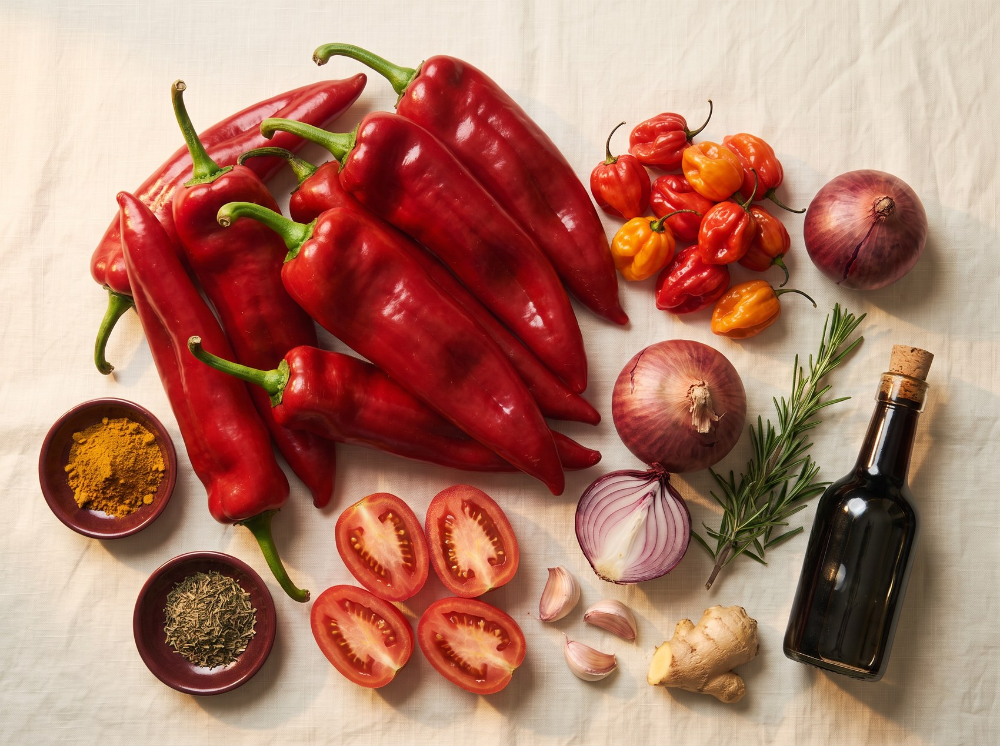
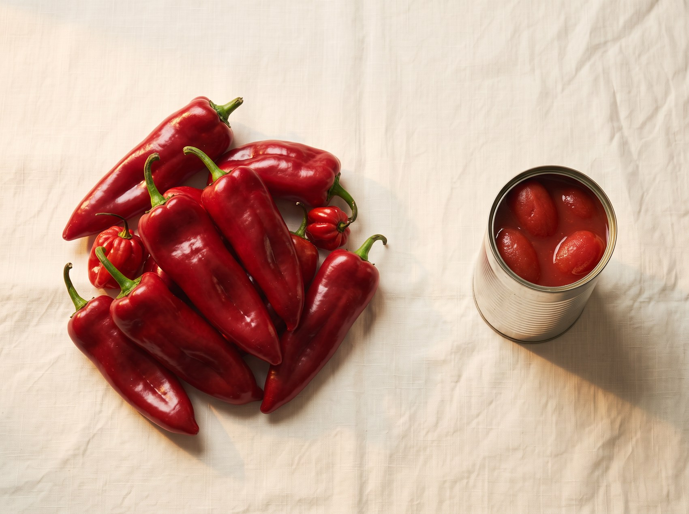
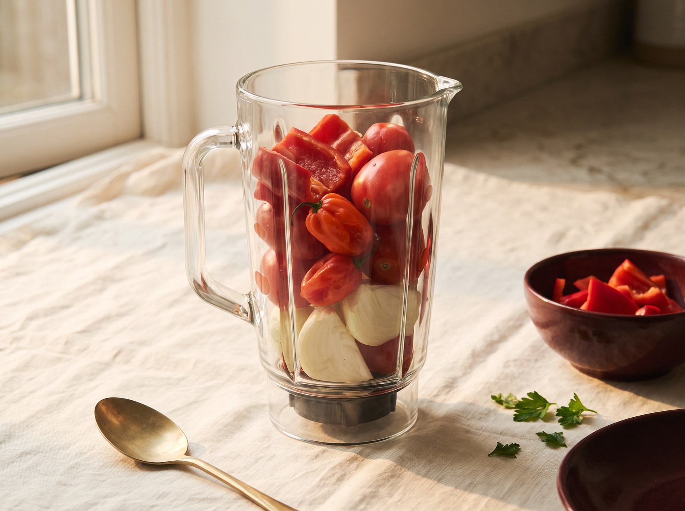
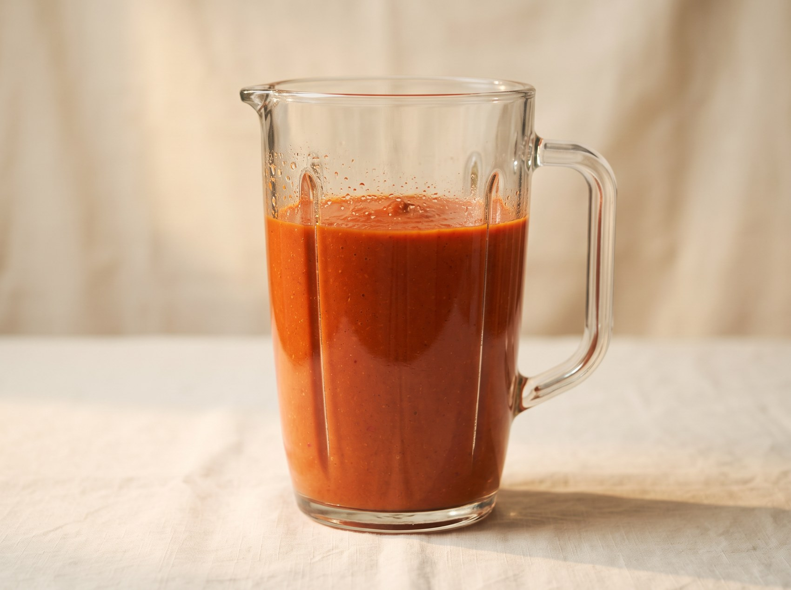
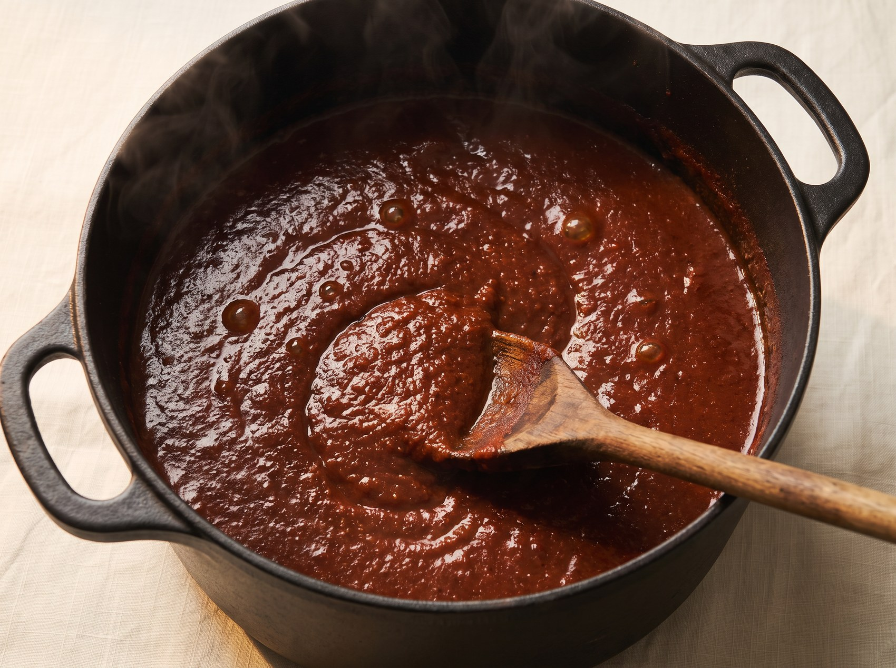
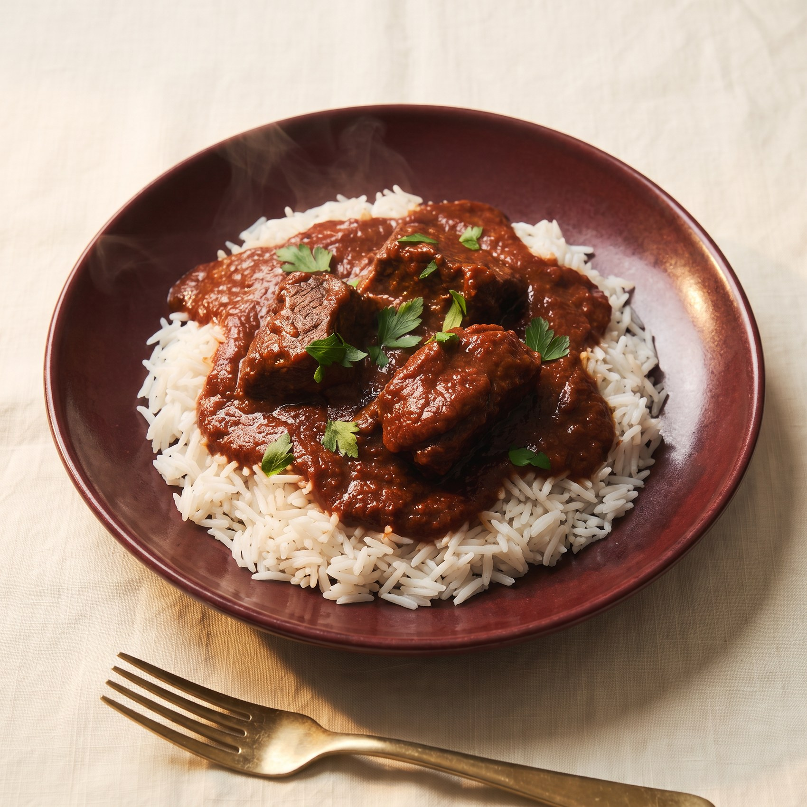

Why most stews go wrong
The fault is hardly ever the ingredients. Everyone buys the same peppers. The fault is almost always one of three things, and once you can name them you can fix them in your own kitchen without looking anything up.
- Tomato took over. It goes in last and least. When it leads, the stew turns sharp and sour and no amount of seasoning will bury it.
- The base never reduced. Water has to leave before oil goes in, or you are making a pepper sauce and calling it a stew.
- The fry stopped too early. This is the one. It is not a five minute step, and it is where the flavour actually develops.
The ideas underneath the recipe
The pepper leads, the tomato follows
Long red tatashe peppers make up the bulk of the base and tomato sits quietly underneath. That is what gives the stew its sweet, deep, pepper forward character instead of the sharp red taste people end up with when tomato takes over. My mother holds this as a fixed proportion rather than a loose idea, which is the part of this that is genuinely hers.
The final fry is where it happens
When the blended base hits hot oil, time and heat change it completely. What you are after is a cooked, concentrated stew rather than a watery pepper sauce that never quite came together.
Two more ideas sit underneath this stew, what the stock from your protein is really for and how my mother seasons the meat before it ever meets the pepper. Those are chapters, not paragraphs, and they are in the book.

What you need
This is the everyday version, scaled for a normal pot on a normal evening.
- 6 long red peppers, tatashe. Broad, fleshy Romano or Ramiro sweet peppers, not thin chillies
- 2 to 4 scotch bonnet, rodo, depending on how hot you want it
- 1 can of plum tomatoes, or 3 fresh plum tomatoes
- 2 onions, one for the base and one for the pot
- 1 thumb of ginger and 3 cloves of garlic
- 1kg of beef, or chicken, or a mix of whatever you like
- 2 stock cubes, Knorr chicken or similar
- 1 teaspoon of curry powder and 1 teaspoon of dried thyme
- Maggi liquid seasoning, to taste
- Vegetable oil, a generous amount
- Salt
If you are shopping in the UK
Tatashe is sold as Romano or Ramiro peppers in most supermarkets, and as long red pepper in African and Asian shops, which is usually cheaper and better. Red bell pepper will do at a push, though it is sweeter and thinner in flavour. Scotch bonnet is worth a trip to the African shop because the supermarket ones are often milder than they look.
How to make it



- Season and cook your protein first.
Put your meat in a pot with half an onion, your stock cubes, thyme, curry powder and salt. Add just enough water to cover it and cook it until it is tender. Do not pour the liquid away. That stock is the reason this stew will taste like it has been cooking all day. - Blend the pepper base.
Long red pepper first and most of it, then your scotch bonnet, one onion, your ginger and garlic, and the tomato last and least. Blend it with the stock you saved rather than with water. Smooth for a classic texture, a little rough if that is how you grew up eating it. Both are correct. - Reduce the base before it ever sees oil.
Pour the blend into a dry pot and let it cook down until most of the water has gone. This is the step almost everyone skips, and it is why their stew never thickens properly later. - Brown your onion in the oil.
Fresh pot, generous oil, and either fry a half onion until it is deeply browned and lift it out, which is my mother's way, or dice it and soften it, which is quicker. You are cooking for the flavour the onion leaves behind. - Fry the base properly.
Add the reduced base to the hot oil and let it fry, stirring now and then, until the raw smell disappears and the colour darkens. Do not rush this. It takes as long as it takes, and it is the single biggest difference between a stew and a pepper sauce. - Bring it together and taste.
Fold in your cooked protein, let it sit in the stew for a few minutes, then taste it and be honest with yourself. A little more stock seasoning, a pinch more salt, or a splash of Maggi, one at a time.

When the pot does not go to plan
Every one of these has happened in our kitchen. None of them are fatal.
It tastes sour or sharp.
Tomato is almost always the reason, and it is the single most common fault in a Nigerian stew. Either there is too much of it in the base, or it has not been fried long enough to lose its raw edge. Keep frying and taste again before you add anything.
It tastes watery.
Keep cooking it uncovered, or partly covered, until it reduces. Resist adding more stock unless you genuinely need the liquid.
It tastes bitter.
The peppers probably need more cooking, or something has caught and over charred. Keep frying gently and taste again. Do not try to bury bitterness under more seasoning, because it does not work.
Five more go wrong in a Nigerian pot: too spicy, too salty, flat, pale and sticking. They are all on the rescue card below, one page, free, meant for the kitchen wall.
What to eat it with
One base, many dinners. Rice is the obvious one, and the one most people mean when they say stew. Boiled yam takes it beautifully. Spaghetti is what half of Nigeria actually eats on a weeknight. Beans, plantain, potatoes and any swallow all work, and the stew does not change at all, which is the point of cooking a proper pot of it.
